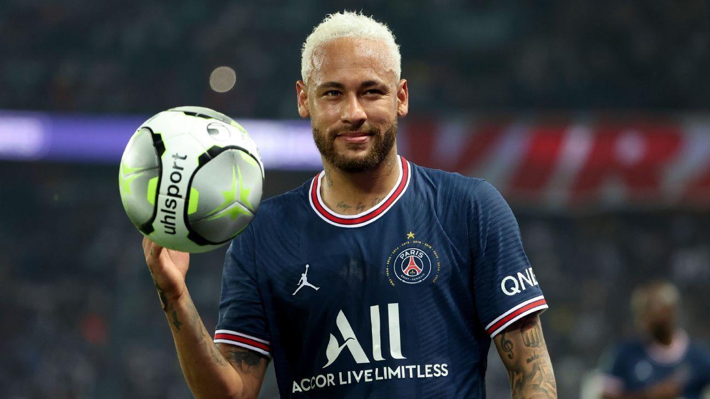

Jugadores Históricos del Fútbol
-
Cristiano Ronaldo
Cristiano Ronaldo Dos Santos Aveiro, es un futbolista portugués que juega como delantero
y es considerado como uno de los mejores delanteros del mundo del fútbol. -

Lionel Messi
Es un futbolista argentino que juega como delantero. Jugador histórico del Fútbol Club Barcelona
, al que estuvo ligado veinte años, actualmente está sin equipo -

Jugador 3
Neymar da Silva Santos Júnior, conocido como Neymar Júnior o simplemente Neymar, es un futbolista brasileño
que juega como delantero en el Paris Saint-Germain F. C. de la Ligue 1 de Francia. -

Kylian Mbappé
Es un futbolista francés que juega como delantero en el Paris Saint-Germain F. C. de la Ligue 1.
Comenzó su carrera con el AS Mónaco de la liga francesa, haciendo su debut profesional en 2015